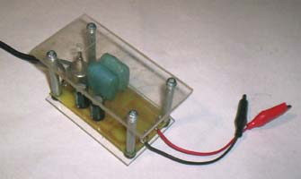
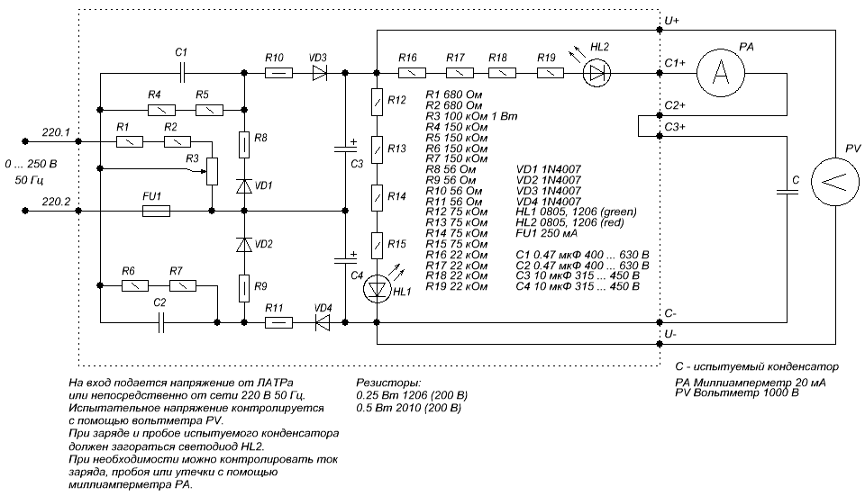
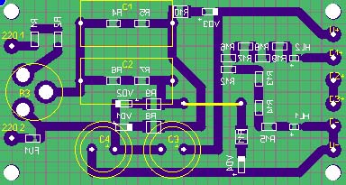
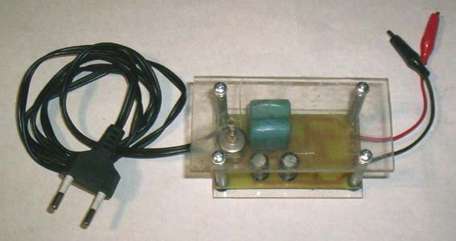
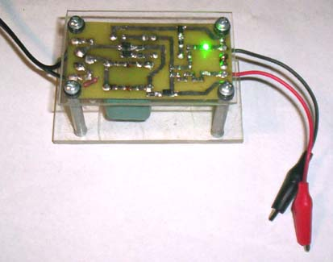

Высоковольтный стенд для оперативного входного
контроля заявленного
максимального постоянного рабочего напряжения конденсаторов

1. Введение
Электрический конденсатор [3] - один из наиболее часто применяемых в схемотехнике компонентов. Он характеризуется двумя основными параметрами - емкостью и максимально допустимым рабочим напряжением, как правило, постоянным, которые указываются в обозначении конденсатора. Емкость обычно измеряется специальными приборами, использующими низковольтный переменный сигнал. Максимальное рабочее напряжение, указываемое в обозначении конденсатора, как правило, вполне соответствует реально допустимому напряжению на его обкладках даже с некоторым запасом. Однако, изредка попадаются как партии конденсаторов, так и отдельные конденсаторы, у которых либо обозначенное допустимое напряжение не соответствует действительности, либо обозначение вообще отсутствует. Поэтому желательно проводить входной контроль рабочего напряжения конденсаторов, особенно стоящих в таких узлах цепи, где их пробой и отказ чреват катастрофическими последствиями. Для этой цели желательно иметь стенд, позволяющий оперативно проверять способность конденсаторов гарантированно работать либо при заявленном максимальном напряжении, либо при рабочем напряжении цепи. Данный стенд должен быть по возможности наиболее простым, чтобы до минимума сократить расходы на его изготовление и эксплуатацию. Наличие достаточно высокого контрольного постоянного напряжения (до 1000 В) также может позволить использовать этот стенд для испытания качества изоляции, например, межобмоточной. Помимо этого стенд может служить и в качестве маломощного высоковольтного источника питания.
2. Принцип работы и конструкция стенда
Принцип работы стенда основан на подаче на выводы испытуемого конденсатора заданного постоянного напряжения, которое создается регулируемым выпрямителем с умножением напряжения [1]. На вход выпрямителя поступает переменное напряжение либо непосредственно от сети переменного тока 220 В 50 Гц, либо через регулируемый автотрансформатор (ЛАТР). Выпрямленное напряжение подается на испытуемый конденсатор через токоограничивающий резистор и контрольный светодиод и миллиамперметр (при необходимости).
Схема электрическая принципиальная стенда показана на рис. 2.1. Устройство включается в сеть переменного тока через предохранитель FU1. Для регулировки выходного напряжения служит потенциометр R3. Резисторы R1R2 ограничивают выходное напряжение по максимальной величине. На конденсаторах C1C2 и диодах VD1-VD4 собран симметричный учетверитель напряжения [1], к выходу которого подключаются накопительные конденсаторы C3C4. Резисторы R4R5 и R6R7 служат для разрядки конденсаторов C1 и C2, когда устройство отключено от сети. Резисторы R8-R11 ограничивают броски тока через диоды VD1-VD4 при разряженных конденсаторах устройства. Для контроля выходного напряжения используется цепочка R12R13R14R15HL1 со светодиодом зеленого свечения HL1, а для контроля тока утечки - цепочка R16R17R18R19HL2 (светодиод красного свечения HL2). Выходное напряжение может контролироваться на клеммах U+ и U- с помощью внешнего вольтметра PV с диапазоном измерения до 1000 В постоянного напряжения, а ток утечки - с помощью внешнего миллиамперметра PA с диапазоном измерения 2 или 20 мА постоянного тока.

Рис. 2.1. Схема электрическая принципиальная стенда для контроля рабочего напряжения конденсаторов.
Эскиз печатной платы стенда приведен на рис. 2.2. Монтаж выполнен комбинированным способом с установкой как элементов с поверхностным монтажом (SMD-элементы), так и элементов с выводами.

Рис. 2.2. Эскиз печатной платы стенда для контроля рабочего напряжения конденсаторов. Односторонний фольгированный стеклотекстолит толщиной 1.0 ... 1.5 мм. Размер платы 75 х 40 мм2.
Внешний вид стенда показан на рис. 2.3, 2.4. Для повышения безопасности плата стенда закрыта сверху и снизу защитными прозрачными крышками.

Рис. 2.3. Стенд для контроля рабочего напряжения конденсаторов (вид сверху).

Рис. 2.4. Стенд для контроля рабочего напряжения конденсаторов (вид снизу). Накопительные конденсаторы заряжены, выходное напряжение максимальное, зеленый светодиод горит.
3. Технические данные стенда
3.1. Питание: напряжение 0 ... 250 В, частота 50 ... 60 Гц,
может использоваться сеть переменного тока 220 В 50 Гц.
3.2. Потребляемая от сети переменного тока напряжением 220 В мощность не
превышает 3 В ∙ А без подключенной нагрузки.
3.3. Максимальное выходное постоянное напряжение 600 ... 1000 В (в зависимости
от рабочего напряжения конденсаторов C3, C4).
3.4. Максимальный выходной ток до 10 мА.
3.5. Габариты 100 х 50 х 50 мм3 (без учета кабелей подключения).
3.6. Масса с подключающими проводами не более 120 г.
4. Способы применения стенда
Вначале к выходам U+U- предварительно отключенного стенда подсоединяется вольтметр с диапазоном измерения 1000 В постоянного напряжения для контроля выставляемого испытательного напряжения. Для этой цели может использоваться, например, мультиметр DT830. Стенд подключается к сети переменного тока, с помощью потенциометра R3 выставляется испытательное напряжение. Зеленый светодиод HL1 при этом должен загореться. После этого стенд отключается от сети, к выходным клеммам C1+ и С- подключается испытуемый конденсатор. При необходимости он может быть подключен с использованием вспомогательных клемм C2+C3+ через миллиамперметр с диапазоном измерения 2 или 20 мА (также может быть использован мультиметр DT830). Стенд снова включается в сеть, и производится контроль работоспособности конденсатора на заданном напряжении. Если конденсатор его выдерживает, то красный светодиод HL2 перестает светиться после полной зарядки конденсатора, а показания миллиамперметра устанавливаются равными нулю. Испытывать можно как неполярные, так и полярные конденсаторы, в частности, электролитические, соблюдая полярность их подключения.
Помимо испытания конденсаторов, с помощью стенда можно проверять качество изоляции между двумя отдельными проводниками. Для этого они аналогично подключаются к клеммам C1+C- либо напрямую, либо через миллиамперметр (при этом могут использоваться клеммы C2+C3+). Если изоляция выдерживает выставленное контрольное напряжение, красный светодиод HL2 не светится, а показания миллиамперметра равны нулю.
При использовании стенда в качестве высоковольтного источника постоянного напряжения нагрузка подключается к клеммам U+U-. К этим же клеммам для контроля выходного напряжения может быть подключен вольтметр с диапазоном до 1000 В постоянного напряжения. Внутреннее сопротивление данного источника [2] равно примерно 60 кОм, соответственно, ток нагрузки может составлять сотни микроампер - единицы миллиампер.
5. Техника безопасности
В стенде имеется высокое напряжение, опасное для жизни. Поэтому все подключения испытуемых конденсаторов и приборов должны производиться при обесточенном стенде после полной разрядки его конденсаторов (когда перестанет светиться зеленый светодиод HL1). При работе со стендом необходимо избегать касания токопроводящих элементов. Также необходимо учитывать, что некоторые конденсаторы, особенно электролитические, способны взрываться при пробое изолирующих обкладок, поэтому не следует выставлять испытательное напряжение существенно выше (более чем на 10 ... 15 %) предполагаемого допустимого максимального рабочего напряжения конденсатора.
Ссылки:
30.01.2026
Альтернативные источники
энергии
Компьютеры и
Интернет
Магнитные поля
Механотронные системы
Перспективные
разработки
Электроника и технология